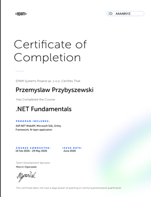
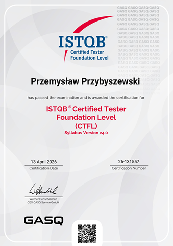

Witaj.
Nazywam się Przemysław Przybyszewski. Pracuję jako .NET Developer w PKP PLK S.A., gdzie rozwijam systemy kolejowe. Wcześniej przez kilka lat byłem inżynierem testów, co dało mi unikalne spojrzenie na jakość i architekturę kodu. W wolnym czasie buduję projekty w ekosystemie .NET — szczególnie w Blazorze i .NET MAUI.
O mnie
Absolwent Uniwersytetu WSB Merito we Wrocławiu. Pracuję jako .NET Developer w PKP PLK S.A., gdzie rozwijam oprogramowanie dla systemów kolejowych. Posiadam certyfikaty ISTQB Foundation Level 4.0 oraz EPAM .NET Fundamentals.
Przez kilka lat pracowałem jako inżynier testów, dzięki czemu patrzę na kod z perspektywy zarówno architekta, jak i osoby dbającej o jakość — znam typowe błędy i wiem, jak im zapobiegać już na etapie projektowania.
Główny stack: C#, ASP.NET Core, Blazor, Entity Framework Core, xUnit/NUnit, SQL, REST API.
W wolnym czasie rozwijam własne projekty — aplikację kadrowo-płacową CloudFlow, mobilną aplikację FoodBook oraz aplikację do wysyłki faktur do KSeF.
Certyfikaty

- C# Fundamentals (OOP, generics, LINQ)
- ASP.NET Core Fundamentals (DI, middleware pipeline, configuration)
- REST API development (controllers, routing, model binding, validation)
- Entity Framework Core (DbContext, migrations, relationships, LINQ queries)
- Asynchronous programming (async/await, Task-based programming, CancellationToken)
- Multithreading basics (ThreadPool, Task Parallel Library)
- Reflection (type inspection, dynamic invocation, attributes)
- Serialization (System.Text.Json, XML serialization, custom converters)
- Design Patterns & SOLID principles (Clean Architecture basics)
- Unit Testing fundamentals (xUnit, AAA pattern)
- Mocking with Moq (stubs, mocks, verification, setups)
- SQL fundamentals (JOINs, aggregations, indexing basics)

- Fundamentals of software testing (objectives, principles, psychology of testing)
- Test levels (unit, integration, system, acceptance testing)
- Test types (functional, non-functional, regression, exploratory testing)
- Static testing techniques (reviews, walkthroughs, inspections)
- Test design techniques (equivalence partitioning, boundary value analysis, decision tables)
- Test management basics (test planning, estimation, prioritization, risk-based testing)
- Defect lifecycle (bug reporting, severity vs priority, defect management process)
- Test tools and automation basics (test execution tools, CI/CD awareness)
- Agile testing principles (shift-left testing, continuous testing in Scrum/Kanban)
- Test metrics and reporting (coverage, defect density, test progress reporting)
- Configuration management and test environments basics